About this module
This page contains 15 classroom-ready lessons. Every lesson includes a longer explanation, learning targets, an applied capstone example, and a local instructional diagram that shows the lesson rules in a clear three-step sequence.
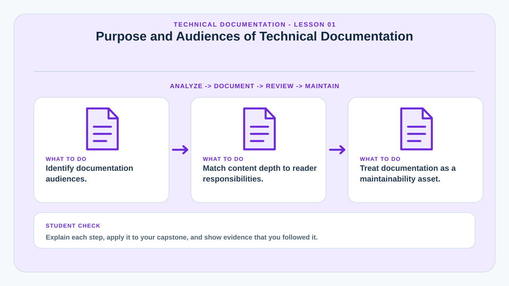
Purpose and Audiences of Technical Documentation
Technical documentation transfers system knowledge from the development team to the people who must understand, operate, maintain, evaluate, or extend the project.
Documentation should be written for a defined audience. A developer needs architecture, APIs, data models, dependencies, and setup instructions. A system administrator needs deployment, backup, monitoring, and recovery procedures. An end user needs task-oriented instructions. A panel needs evidence that the system was designed and validated systematically.
One document rarely serves every audience equally well. Strong capstone documentation separates concerns while maintaining consistent terminology and references.
Documentation is part of the system's maintainability. Undocumented assumptions become future defects because later maintainers must guess why a decision was made.
Learning targets
- Identify documentation audiences.
- Match content depth to reader responsibilities.
- Treat documentation as a maintainability asset.
Why this matters in a capstone
This lesson helps the team connect implementation decisions to deployment evidence, technical documentation, operational readiness, and questions that may be raised during evaluation or defense.
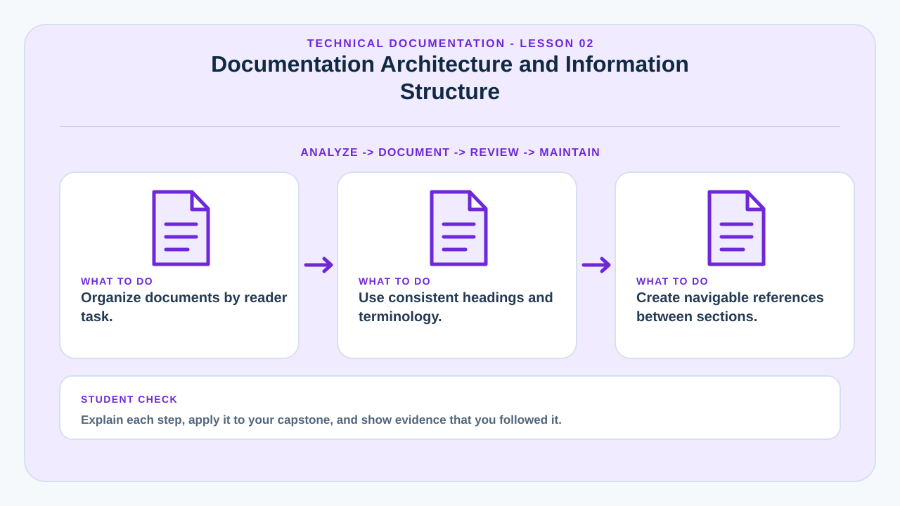
Documentation Architecture and Information Structure
A documentation set needs an intentional structure so readers can locate information efficiently.
Common sections include overview, system scope, architecture, requirements, installation, configuration, database design, API reference, security, deployment, administration, troubleshooting, user procedures, testing, limitations, and change history.
Information architecture should move from orientation to detail. Readers should first understand what the system is, then how major components relate, then how to perform specific technical tasks.
Consistent headings, numbering, terminology, diagrams, links, and revision identifiers make the documentation easier to use and review.
Learning targets
- Organize documents by reader task.
- Use consistent headings and terminology.
- Create navigable references between sections.
Why this matters in a capstone
This lesson helps the team connect implementation decisions to deployment evidence, technical documentation, operational readiness, and questions that may be raised during evaluation or defense.
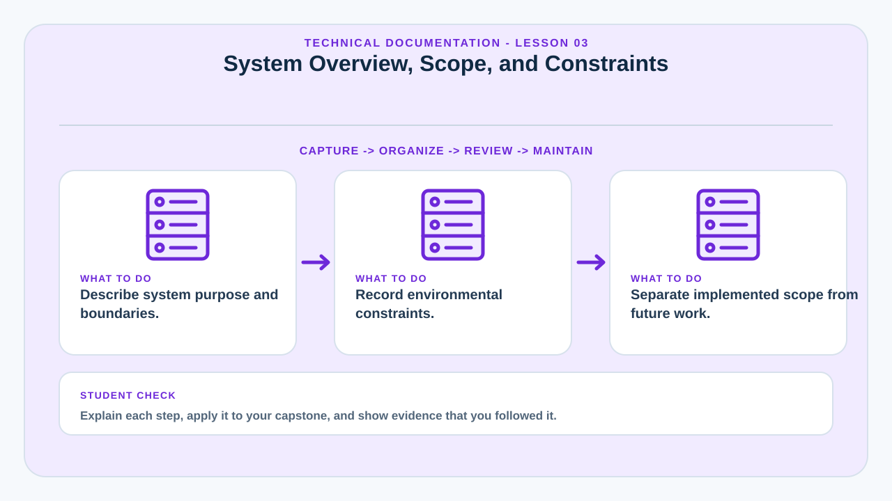
System Overview, Scope, and Constraints
The overview defines what the system is intended to do and where its responsibilities stop.
A technical overview should state the problem addressed, target users, major capabilities, operating environment, external dependencies, and important limitations. This gives context before readers encounter detailed diagrams or code references.
Scope statements should distinguish implemented features from proposed future enhancements. Constraints such as internal-network-only use, supported browsers, maximum upload size, or required database version should be explicit.
Clear boundaries protect the project from misleading claims and help future maintainers understand which behavior is intentional.
Learning targets
- Describe system purpose and boundaries.
- Record environmental constraints.
- Separate implemented scope from future work.
Why this matters in a capstone
This lesson helps the team connect implementation decisions to deployment evidence, technical documentation, operational readiness, and questions that may be raised during evaluation or defense.
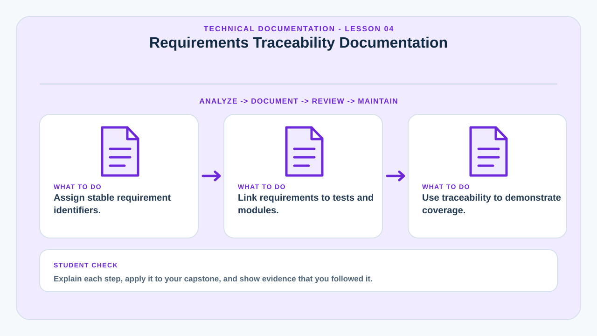
Requirements Traceability Documentation
Traceability connects stakeholder needs to design, implementation, and validation evidence.
A requirements traceability matrix typically assigns an identifier to each requirement and links it to the relevant design component, module, test case, and implementation status. This makes coverage visible.
Traceability is useful during capstone defense because it helps answer questions such as “Where was this requirement implemented?†and “How did you verify it?†without relying on memory.
Requirements should be specific enough to test. Vague goals such as “the system should be user-friendly†are difficult to trace unless translated into measurable usability criteria.
Learning targets
- Assign stable requirement identifiers.
- Link requirements to tests and modules.
- Use traceability to demonstrate coverage.
Why this matters in a capstone
This lesson helps the team connect implementation decisions to deployment evidence, technical documentation, operational readiness, and questions that may be raised during evaluation or defense.
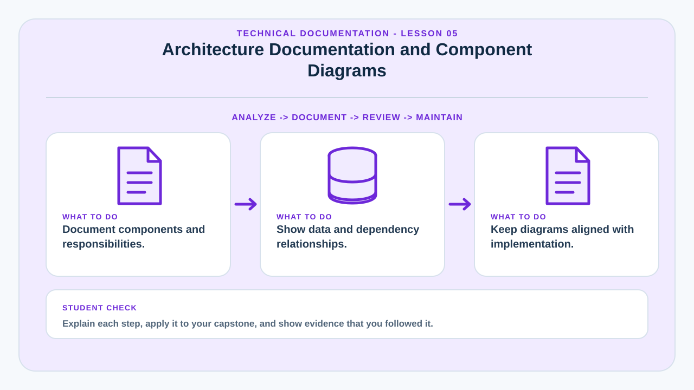
Architecture Documentation and Component Diagrams
Architecture documentation explains the system's major components, responsibilities, and relationships.
A useful architecture diagram shows client applications, web servers, APIs, databases, storage, external services, and trust boundaries without overwhelming the reader with low-level code details.
Each component should have a short description of responsibilities, technologies, interfaces, and dependencies. The documentation should also identify important architectural decisions such as layered design, client-server structure, or separation between presentation, business logic, and data access.
Diagrams should match the actual implementation. Decorative architecture diagrams that do not correspond to deployed components weaken technical credibility.
Learning targets
- Document components and responsibilities.
- Show data and dependency relationships.
- Keep diagrams aligned with implementation.
Why this matters in a capstone
This lesson helps the team connect implementation decisions to deployment evidence, technical documentation, operational readiness, and questions that may be raised during evaluation or defense.
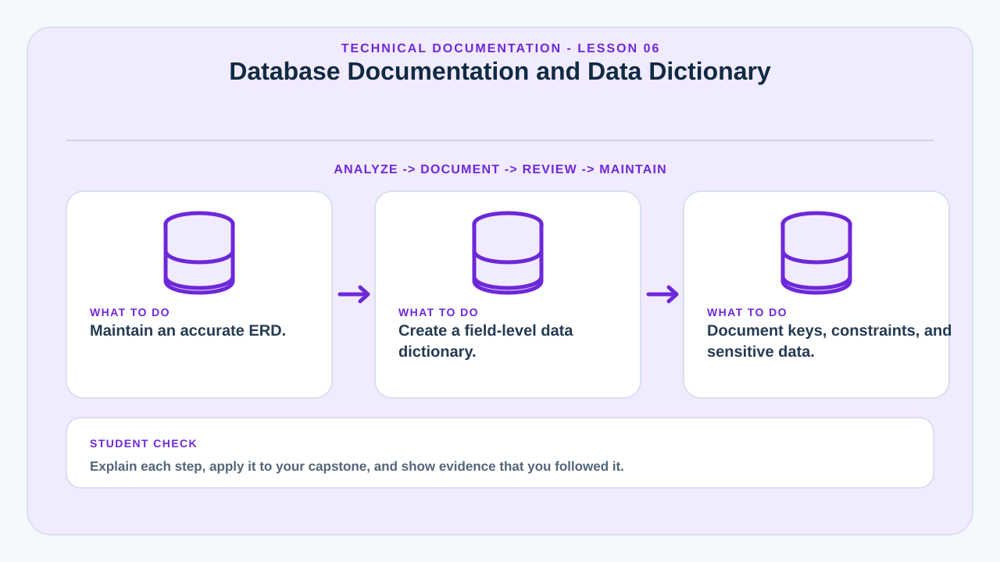
Database Documentation and Data Dictionary
Database documentation explains what data is stored, how entities relate, and what rules preserve data integrity.
An ERD shows entities and relationships, while a data dictionary describes each table and field in more detail. Useful entries include data type, nullability, default value, purpose, constraints, keys, and relationships.
Documentation should identify indexes, unique constraints, cascading behavior, and sensitive fields where these affect operation or privacy. Naming conventions should be consistent.
Database documentation is especially important for maintenance because a future developer must understand the meaning of a field before changing or reusing it.
Learning targets
- Maintain an accurate ERD.
- Create a field-level data dictionary.
- Document keys, constraints, and sensitive data.
Why this matters in a capstone
This lesson helps the team connect implementation decisions to deployment evidence, technical documentation, operational readiness, and questions that may be raised during evaluation or defense.
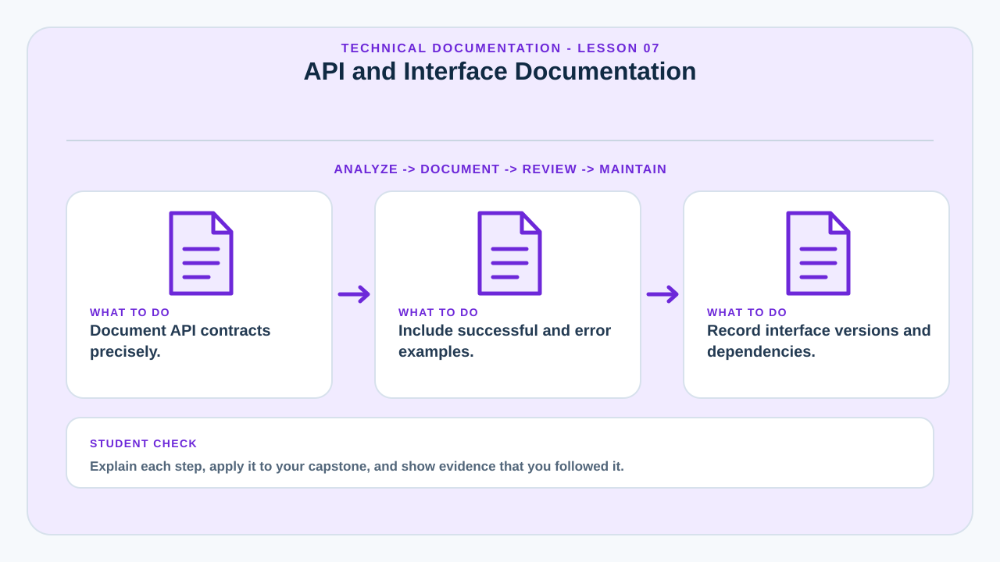
API and Interface Documentation
API documentation defines how software components communicate.
For each endpoint, document the purpose, URL, method, authentication, parameters, request body, response format, status codes, validation rules, and common errors. Example requests and responses reduce ambiguity.
Interface documentation should also cover file formats, database exchanges, webhooks, message queues, or third-party service dependencies where applicable.
Versioning matters because consumers may depend on existing behavior. Breaking changes should be documented with migration guidance.
Learning targets
- Document API contracts precisely.
- Include successful and error examples.
- Record interface versions and dependencies.
Why this matters in a capstone
This lesson helps the team connect implementation decisions to deployment evidence, technical documentation, operational readiness, and questions that may be raised during evaluation or defense.
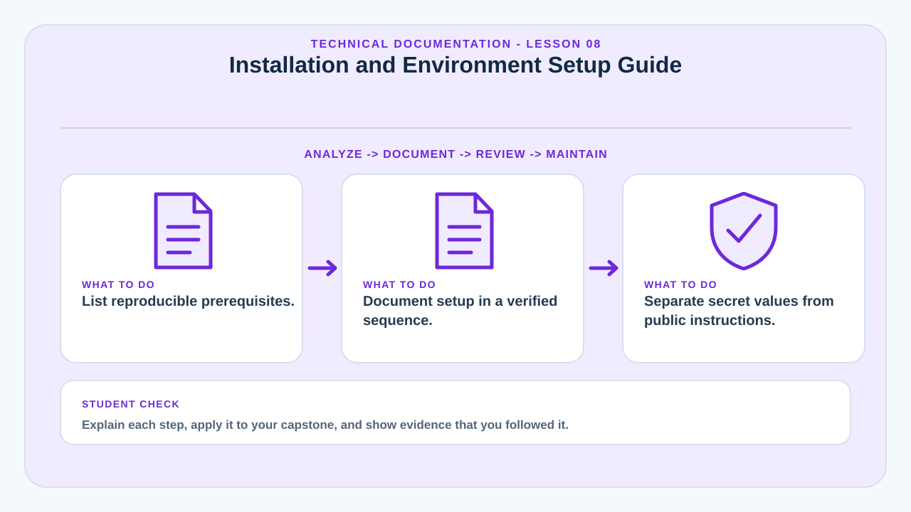
Installation and Environment Setup Guide
A setup guide allows another technically capable person to reproduce the system environment.
The guide should list prerequisites, supported versions, required services, dependency installation, database creation, configuration values, build commands, startup commands, and verification steps.
Instructions should be tested on a clean environment. A setup process that only works on the original developer's computer usually contains undocumented assumptions.
When secrets are required, documentation should describe where values belong without publishing actual production credentials.
Learning targets
- List reproducible prerequisites.
- Document setup in a verified sequence.
- Separate secret values from public instructions.
Why this matters in a capstone
This lesson helps the team connect implementation decisions to deployment evidence, technical documentation, operational readiness, and questions that may be raised during evaluation or defense.
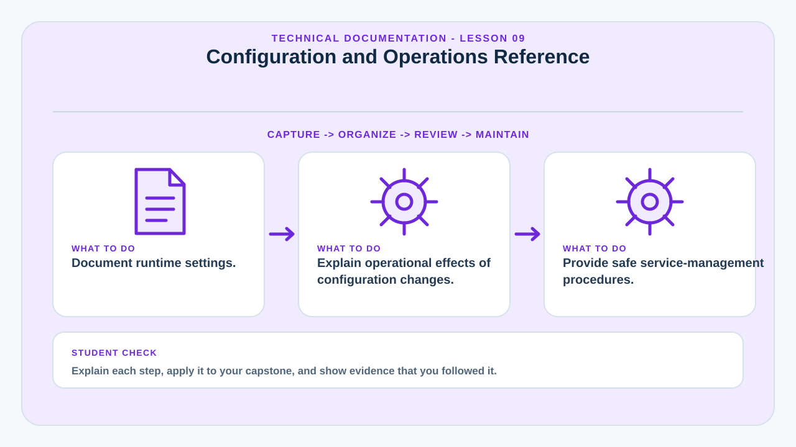
Configuration and Operations Reference
Operational documentation describes settings that affect runtime behavior and service management.
Configuration references should define environment variables, feature flags, file paths, service ports, storage limits, email settings, backup schedules, and other runtime controls.
For each setting, document its purpose, expected format, safe default where appropriate, and whether changing it requires a restart. High-risk settings should include warnings and rollback guidance.
Operations references can also include startup, shutdown, restart, log location, maintenance mode, scheduled tasks, and service health checks.
Learning targets
- Document runtime settings.
- Explain operational effects of configuration changes.
- Provide safe service-management procedures.
Why this matters in a capstone
This lesson helps the team connect implementation decisions to deployment evidence, technical documentation, operational readiness, and questions that may be raised during evaluation or defense.
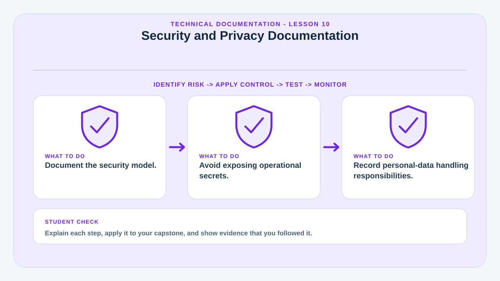
Security and Privacy Documentation
Security documentation records controls, assumptions, sensitive assets, and administrative responsibilities.
Relevant topics include authentication, authorization, password handling, session management, encryption, audit logging, backups, retention, account lifecycle, privileged access, and incident response.
Documentation should not publish exploitable secrets. It should explain the control model while keeping actual credentials and sensitive infrastructure details protected.
Privacy documentation should identify personal data collected, purpose of collection, access rules, retention, and deletion or archival behavior where required by project scope.
Learning targets
- Document the security model.
- Avoid exposing operational secrets.
- Record personal-data handling responsibilities.
Why this matters in a capstone
This lesson helps the team connect implementation decisions to deployment evidence, technical documentation, operational readiness, and questions that may be raised during evaluation or defense.
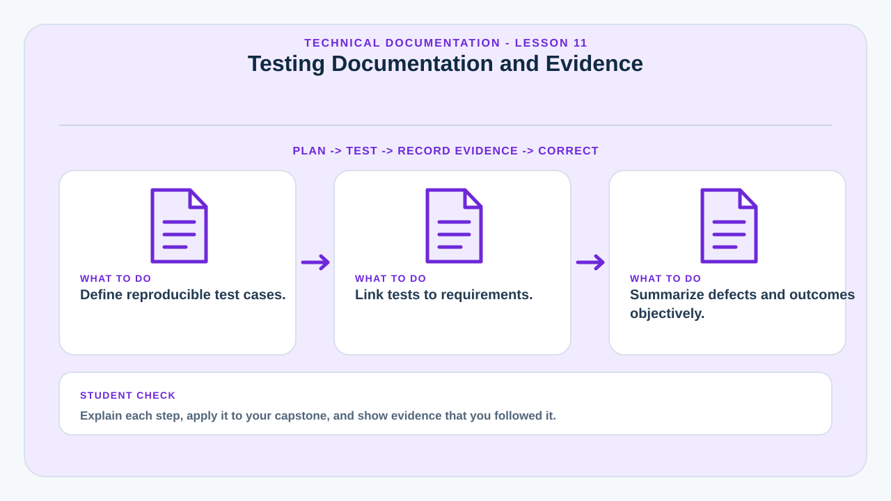
Testing Documentation and Evidence
Testing documentation demonstrates how the team verified that the system satisfies its requirements.
A test case should identify the requirement or feature, preconditions, input, steps, expected result, actual result, status, and evidence. Test summaries can report pass rates and unresolved defects.
Different test levels may include unit, integration, system, user acceptance, performance, security, compatibility, and recovery testing depending on project scope.
Screenshots can support evidence, but they should not replace precise test descriptions. A screenshot shows a state; a test record explains the procedure and expected behavior.
Learning targets
- Define reproducible test cases.
- Link tests to requirements.
- Summarize defects and outcomes objectively.
Why this matters in a capstone
This lesson helps the team connect implementation decisions to deployment evidence, technical documentation, operational readiness, and questions that may be raised during evaluation or defense.
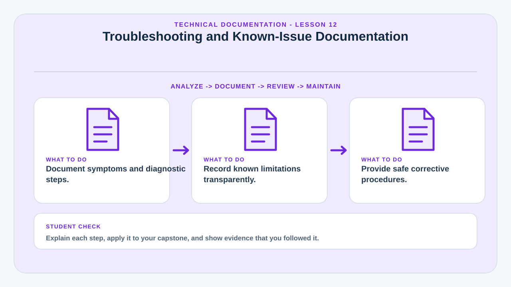
Troubleshooting and Known-Issue Documentation
Troubleshooting guides convert repeated support knowledge into reusable diagnostic procedures.
A troubleshooting entry should describe symptoms, likely causes, diagnostic checks, corrective actions, and escalation conditions. It should be organized by observable problems rather than by internal code structure.
Known issues should clearly state impact, affected versions, workaround, and planned resolution where known. Hiding known limitations makes support harder and weakens stakeholder trust.
Troubleshooting guidance should prioritize safe checks first and avoid destructive steps unless backups and consequences are clearly explained.
Learning targets
- Document symptoms and diagnostic steps.
- Record known limitations transparently.
- Provide safe corrective procedures.
Why this matters in a capstone
This lesson helps the team connect implementation decisions to deployment evidence, technical documentation, operational readiness, and questions that may be raised during evaluation or defense.
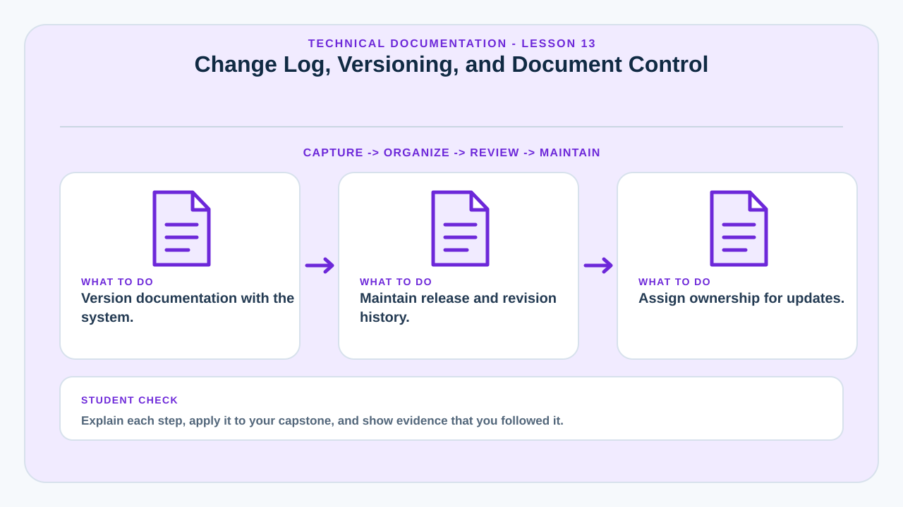
Change Log, Versioning, and Document Control
Documentation must show which system version it describes and how it changes over time.
A change log records release version, date, major changes, fixes, migrations, and known issues. Document control adds revision number, owner, reviewer, approval status, and last updated date.
Version alignment prevents a common maintenance problem: following instructions written for an older release. Documentation updates should be part of the release checklist.
Teams can use source control for documentation so changes are reviewed alongside code and historical revisions remain available.
Learning targets
- Version documentation with the system.
- Maintain release and revision history.
- Assign ownership for updates.
Why this matters in a capstone
This lesson helps the team connect implementation decisions to deployment evidence, technical documentation, operational readiness, and questions that may be raised during evaluation or defense.
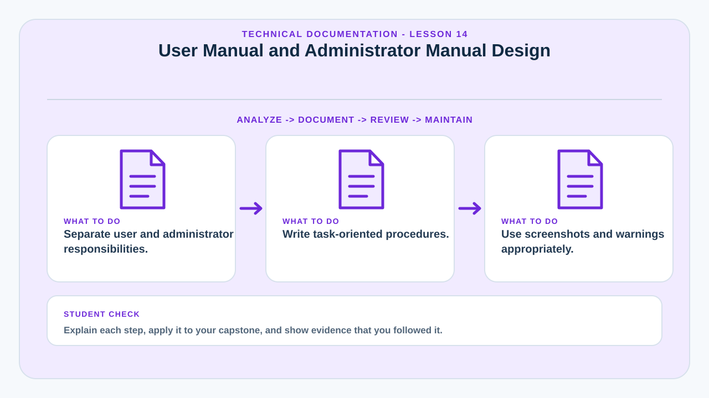
User Manual and Administrator Manual Design
User-facing and administrator-facing manuals should be separated because their tasks and risk levels differ.
A user manual is task-oriented: login, submit, search, update profile, download, or track status. An administrator manual covers privileged actions such as user management, configuration, backup, restore, reports, monitoring, and security review.
Procedures should use clear steps, expected results, warnings, and screenshots where they genuinely improve recognition. Interface labels must match the actual application.
Accessibility and readability matter. Manuals should avoid unexplained jargon when the target audience is nontechnical.
Learning targets
- Separate user and administrator responsibilities.
- Write task-oriented procedures.
- Use screenshots and warnings appropriately.
Why this matters in a capstone
This lesson helps the team connect implementation decisions to deployment evidence, technical documentation, operational readiness, and questions that may be raised during evaluation or defense.
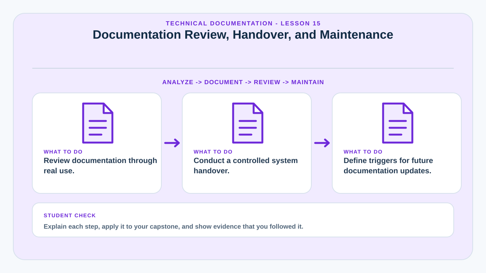
Documentation Review, Handover, and Maintenance
Documentation should be reviewed as an operational deliverable, not completed only for submission.
Review checks technical accuracy, completeness, consistency, usability, broken links, outdated screenshots, missing prerequisites, and unclear procedures. A person who did not write the guide should attempt key procedures.
Handover identifies who receives source code, credentials through secure channels, database access, deployment instructions, backup procedures, architecture diagrams, and support responsibilities.
A maintenance plan should state when documentation is updated—for example, every release, configuration change, schema migration, or operational incident that changes procedures.
Learning targets
- Review documentation through real use.
- Conduct a controlled system handover.
- Define triggers for future documentation updates.
Why this matters in a capstone
This lesson helps the team connect implementation decisions to deployment evidence, technical documentation, operational readiness, and questions that may be raised during evaluation or defense.